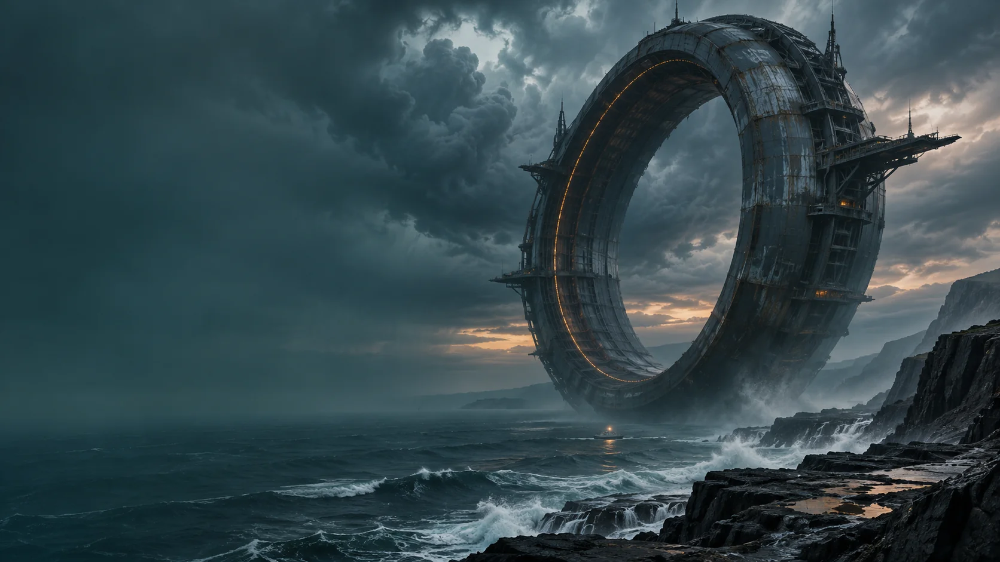
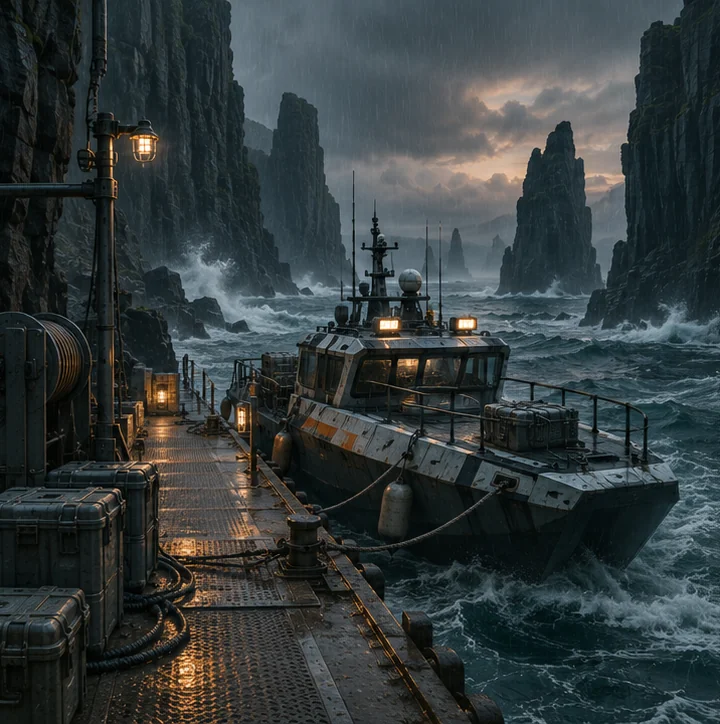
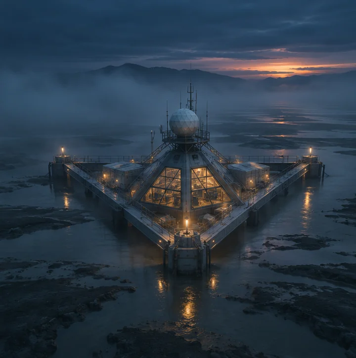

公告边界海域首次勘测即将开始
首次勘测覆盖环礁门、静默海沟与回声灯塔。访客可以从页面上方领取本地演示通行证。

REGION CHART
三条互相连通的航线，每一条都由潮汐和地形改写。

ATOLL GATE
低潮时环礁露出一线通道。沿浮标穿过潮口，在下一股暗流抵达前进入内湾。
SILENT TRENCH
海沟让声呐回波变得稀疏。贴着岩壁校准测距仪，用浮标间的光点确认返航路线。

ECHO BEACON
夜航时跟随短促的橙光靠岸。恢复灯塔的发射阵列，随后用它中继更远处的观测点。
FIELD JOURNAL
首次勘测覆盖环礁门、静默海沟与回声灯塔。访客可以从页面上方领取本地演示通行证。
同一条海峡的入口会随潮位显露或消失。勘测时持续比较水位、浮标位置与回波距离。
三组短促信号分别提示转向、减速与可着陆，让夜航也能靠声音辨别入口。